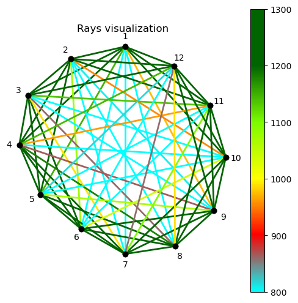
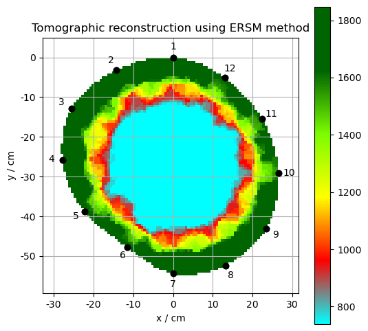
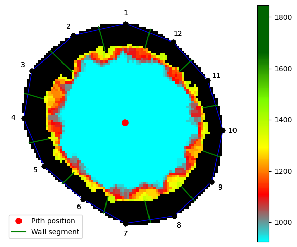

Quick Start Guide
This guide is intended for users who want to quickly get TomoTree up and running in Jupyter notebook. For installation see the Installation Guide.
Basic usage
Initialize tomogram with sensor positions and velocity data
This cell sets up the basic tomogram object with 12 sensors and their measured ultrasound velocities. The symmetric parameter ensures we work with averaged ray paths in both directions.
# Import required libraries and functions
import tomotree as tomo # Main TomoTree package for tomographic reconstruction
import numpy as np # Numerical computations
import matplotlib.pyplot as plt # Plotting graphs
from tomotree.util import show_grid # Helper function for displaying the grid
# Define sensor positions (node coordinates) - 12 sensors
# Format: [x1, y1, x2, y2, ..., x12, y12]
# Each row represents one sensor with coordinates (x, y)
nodes = np.array([
0.000000000000000000e+00,0.000000000000000000e+00,
-1.423512143280224185e-01,-3.243658088235288478e-02,
-2.547529511272511593e-01,-1.277729779411764799e-01,
-2.779073009818450735e-01,-2.576985294117646874e-01,
-2.225714384149889424e-01,-3.876479779411763915e-01,
-1.155980768557571953e-01,-4.782270220588235032e-01,
0.000000000000000000e+00,-5.440000000000000391e-01,
1.314503633637385815e-01,-5.237564338235293215e-01,
2.339414392116714869e-01,-4.305477941176470424e-01,
2.650568812590387568e-01,-2.901617647058822858e-01,
2.237194098650501228e-01,-1.547049632352941462e-01,
1.294254175011995411e-01,-5.069577205882350862e-02,
]).reshape(-1,2) # Reshape to 12x2 matrix (12 sensors, 2 coordinates)
# Matrix of ultrasound velocities between sensors (m/s) - 12x12 matrix
# np.nan on diagonal (no signal from one sensor to itself)
speeds = np.array([
np.nan,1678,1501,1336,1146,793,637,738,972,1203,1400,1503,
1678,np.nan,1546,1439,1329,1075,600,579,807,953,1300,1465,
1501,1546,np.nan,1517,1528,1280,989,859,693,764,1135,1314,
1336,1439,1517,np.nan,1592,1402,1246,1179,865,674,961,1142,
1146,1329,1528,1592,np.nan,1377,1291,1280,1064,756,644,817,
793,1075,1280,1402,1377,np.nan,1263,1402,1256,1040,711,567,
637,600,989,1246,1291,1263,np.nan,1859,1545,1355,1095,857,
738,579,859,1179,1280,1402,1859,np.nan,1474,1431,1215,989,
972,807,693,865,1064,1256,1545,1474,np.nan,1563,1355,1249,
1203,953,764,674,756,1040,1355,1431,1563,np.nan,1288,1320,
1400,1300,1135,961,644,711,1095,1215,1355,1288,np.nan,1513,
1503,1465,1314,1142,817,567,857,989,1249,1320,1513,np.nan,
]).reshape(12,12) # Reshape to 12x12 matrix (12 sensors x 12 sensors)
# Set the size of the reconstructed grid
NX, NY = 100, 100 # 100x100 grid for the tomographic map
# Create tomogram object
# - nodes: sensor positions
# - speeds: measured ultrasound velocities
# - nx, ny: resolution of the output grid
# - symmetric=True: assume symmetric measurements (averaging both propagation directions)
tomogram = tomo.Tomo(nodes, speeds, nx=NX, ny=NY, symmetric=True)
# Plot the rays in the initial tomogram before reconstruction
tomogram.plot(rays=True, grid=False, speed_max=1300, speed_min=800)
# Get current matplotlib axis and set title
ax = plt.gca()
ax.set_title('Rays visualization')
plt.show()

Perform ERSM reconstruction and estimate sound wood speed
This cell executes the tomographic reconstruction algorithm (ERSM method), optimizes the result, and estimates the reference speed in healthy wood. The output shows the reconstructed tomographic map with color-coded velocity values.
# Perform tomographic reconstruction using ERSM method
# Algorithm assumes elliptical ray paths through defects
tomogram.do_ERSM_method()
# Optimize the tomogram - improve reconstruction quality
# This step reduces artifacts and increases accuracy
tomogram.optimize_back_tomogram()
# Estimate sound velocity in undamaged (healthy) part of wood
# Used as reference value for interpreting results
# Faster sound = healthy wood; slower sound = damaged/hollow part
sound_wood_speed = tomogram.estimate_sound_wood_speed()
# Plot the resulting tomographic map
# rays=False: don't show radar rays
# grid=True: display the grid
# speed_max: maximum on color scale (healthy wood)
# speed_min: minimum on color scale (40% of healthy - damaged part)
tomogram.plot(rays=False, grid=True, speed_max=sound_wood_speed,
speed_min=(sound_wood_speed)*0.4) # Range: 40% to 100% of healthy wood
# Get current matplotlib axis and set title
ax = plt.gca()
ax.set_title('Tomographic reconstruction using ERSM method')
# Display sensor grid on the map
show_grid(ax)
# Show the created plot
plt.show()

Wall thickness measurement
Measure wall thickness between sensor pairs
This cell analyzes the tomogram to determine the thickness of healthy wood between each pair of sensors, useful for detecting cavities, decay, and damage in the material.
# Import function for measuring wall thickness and detecting hollow areas
from tomotree.util import measure_walls
# Measure thickness of undamaged part between sensors
# Parameters:
# - tomogram: processed tomogram from previous step
# - sound_wood_speed: sound velocity in healthy wood (reference value)
# - sound_wood_speed*0.5: upper limit for detecting damaged/hollow part (50% of velocity)
# - plot_figure=True: creates visual representation of measurements
# - num=500: number of measurement rays for more detailed analysis
result = measure_walls(tomogram, sound_wood_speed, sound_wood_speed*0.5,
plot_figure=True, num=500)
# Display results in table
# Sensor1: first sensor in the pair
# Sensor2: second sensor in the pair
# Wall_thickness: measured thickness of healthy wood part between sensors
result['df'][['Sensor1','Sensor2','Wall_thickness']]
| Sensor1 | Sensor2 | Wall_thickness | |
|---|---|---|---|
| 0 | 1 | 2 | 0.067698 |
| 1 | 2 | 3 | 0.082489 |
| 2 | 3 | 4 | 0.054076 |
| 3 | 4 | 5 | 0.052706 |
| 4 | 5 | 6 | 0.043366 |
| 5 | 6 | 7 | 0.045426 |
| 6 | 7 | 8 | 0.060180 |
| 7 | 8 | 9 | 0.053882 |
| 8 | 9 | 10 | 0.048272 |
| 9 | 10 | 11 | 0.039736 |
| 10 | 11 | 12 | 0.046236 |
| 11 | 12 | 1 | 0.053496 |

Document |
Modified |
Method |
Run Time (s) |
Status |
|---|---|---|---|---|
2026-04-05 10:11 |
force |
5.53 |
✅ |